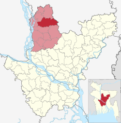

অবস্থান ও আয়তন
ভূতাত্ত্বিকভাবে ঘাটাইল উপজেলাসহ আশেপাশের অঞ্চলের ভূমি মধুপুর কর্দম নামক অতিমাত্রায় বিচূর্ণিত ও জারিত লালচে বাদামি অবক্ষেপ বা আদিম প্রস্তর দ্বারা গঠিত। এই অবক্ষেপটি নতুন প্লাইসটোসিন যুগে জলবায়ুগত কারণে সৃষ্ট ও এটি বিভক্ত কয়েকটি প্লাইসটোসিন সোপানের সমন্বয়ে গঠিত। এটি বাংলাদেশের দ্বিতীয় বৃহত্তম প্লাইসটোসিন চত্বর। একই কর্দমের মধ্যে মধুপুর গড় অঞ্চলসহ লালমাই পাহাড় ও বরেন্দ্র ভূমি সৃষ্টি হয়েছে। প্রাচীন মহাস্থানগড়, পাহাড়পুর বৌদ্ধ বিহার, ময়নামতী সভ্যতাও এই অবক্ষেপের স্তরসমষ্টি বেষ্টিত অঞ্চলের অন্তর্গত। এ অঞ্চলের ভূমি সঞ্চয়ন সংলগ্ন প্লাবনভূমি থেকে সামান্য উঁচু যা হ্যালোইসাইট ও ইলাইটের সমন্বয়ে সৃষ্ট। এগুলো মিলে উত্তর-দক্ষিণে এটি প্রলম্বিত ভূভাগ গঠন করেছে যা স্মারক প্রত্নমৃত্তিকার অন্তর্গত। ভূতত্ত্ববিদদের মতে, ০.৯৭ থেকে ০.৯০ মিলিয়ন বছর পূর্বে এটি গঠিত হয়েছে। হাওর সৃষ্টির সাথে মধুপুর কর্দমের যোগসূত্র রয়েছে বলে মনে করা হয়। উত্তর-প্লাইসটোসিন যুগে এ অঞ্চলটিতে ব্যাপক বৃষ্টিপাত ও বিভিন্নভাবে ক্ষয়ের কারণে বেশকিছু প্লাইসটোসিন সোপান আলাদা হয়ে গিয়েছে। পরে, এই সোপানগুলোই একটি অপরটির সাথে যুক্ত হয়ে ও খোলা স্থানে উর্বর পলিমাটিতে পূর্ণ হয়ে প্লাবনভূমির তৈরি হয়েছে।
প্রশাসনিক এলাকা
ঘাটাইল উপজেলা মোট ১৪টি ইউনিয়ন, ১টি পৌরসভা, ৪২৭টি গ্রাম ও ৩০৬টি মৌজায় বিভিক্ত। ইউনিয়নগুলো হলো, দেউলাবাড়ী, ঘাটাইল, জামুরিয়া, দিগড়, দিঘলকান্দি, আনেহলা, দেওপাড়া, ধলাপাড়া, সন্ধানপুর, লোকেরপাড়া, রসুলপুর, সংগ্রামপুর, সাগরদিঘি এবং লক্ষিন্দর। ব্রিটিশ শাসনামলে ১৯৬১ সালে এখানে থানা বা পুলিশ স্টেশন স্থাপন করা হয়। বাংলাদেশ স্বাধীনতা লাভের পর ১৯৮৩ সালে ঘাটাইলকে উপজেলা করা হয়। উপজেলা প্রশাসনের আবেদনের ভিত্তিতে স্থানীয় সরকার, পল্লী উন্নয়ন ও সমবায় মন্ত্রণালয় ২০১৪ সালের ২১ আগস্ট ধলাপাড়া, রসুলপুর ও সন্ধানপুর ইউনিয়নকে ভেঙে সংগ্রামপুর, সাগরদিঘি ও লক্ষিন্দর নামে আরও তিনটি নতুন ইউনিয়ন তৈরির গেজেট প্রকাশ করে। ১৯৯৮ সালের ১২ সেপ্টেম্বর স্থানীয় সরকার মন্ত্রণালয় ঘাটাইল শহরের ১১.০২ বর্গ কিলোমিটার এলাকাকে পৌরসভা হিসেবে ঘোষণা করে। পৌরসভাটি ১১টি গ্রাম ও ৯টি ওয়ার্ড নিয়ে গঠিত। পৌরসভাটির বর্তমান মেয়ার হিসেবে দায়িত্ব পালন করছেন শহিদুজ্জামান খান।
উল্লেখযোগ্য স্থান:
- গুপ্ত বৃন্দাবন: প্রতি বছর চৈত্র মাসের ১২ তারিখ একটি তমাল গাছকে কেন্দ্র করে এখানে ‘বারুনি মেলা’ নামে একটি মেলা বসে। সনাতন ধর্মাবলম্বীদের বিশ্বাস অনুসারে, শ্রীকৃষ্ণ ও রাধা এই তমাল এখানে সময় কাটাতেন।
- ধলাপাড়া চৌধুরীবাড়ী ও ধলাপাড়া জামে মসজিদ: ১২২৩ বঙ্গাব্দে এ জমিদার বাড়িটি ও ১৯১৭ সালে সালে সংলগ্ন মসজিদটি নির্মাণ করা হয়।
- সাগরদীঘি: ঘাটাইলের সাগরদিঘী ইউনিয়নে পাল বংশের সাগর নামে একজন রাজা ৩৬ একর আয়তনের একটি দিঘী খনন করেন। তার নামানুসারে পরবর্তীতে দিঘীটি সাগরদিঘী নামে পরিচিতি পায় এবং দিঘীর নামানুসারে এলাকাটিরও নামকরণ করা হয়।
ঘাটাইল উপজেলা
মানচিত্রে ঘাটাইল উপজেলা